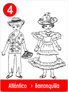
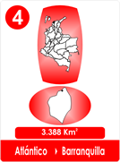
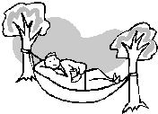

4 "LA CAMA DE AIRE" ATLANTICO
- Consulta a Jesús
- Fábulas de Colombia
- Metodo Corima
- Arbol
- Flor
- Fruto
- Estrellas Pequeñas
- Nostradamus
- La Ruta del Sol
- Fabula de Corima
- Productos y Servicios
- Mensajeros Celestiales
- Juguemos
- Articulos
- Estrellas Humanas
- Herramientas
- Plantas Milagrosas
- Adorables Fechas
- Videos

 
Doña Rufina tenía un sueño muy profundo, no era sino poner la cabeza sobre la almohada que colocaba en la estera, para ir de viaje al país de los sueños.
Cierta noche hizo tanto calor, que Doña Rufina pensó que podría recoger su sudor y llenar una totuma. Sentía que se le había espabilado el sueño por el sofoco y el viento había huido despavorido sin refrescar la estera.
De mañanita Doña Rufina ideó un plan, para que el calor no le impidiera soñar y dormir a pierna suelta.
Todos se sorprendieron al ver a Doña Rufina en su telar haciendo nudos y nudos de colores, pero no era para hacer cortinas, ni se parecía a las colchas que vendía en el mercado, era algo raro y distinto.
- ?Qué haces abuela enredando madejas?
Es una idea loca mi niña, quiero hacer una Cama de Aire, obligando al calor a que no me trasnoche y dormir como me gusta.
Entonces la niña salio gritando: Mamita, mi abuelita está haciendo una cama de aire de muchos colores!
Así Nuri vino a enterarse de la "cama de aire" y muy sonriente se asomó con una bandeja repleta de buenas tajadas de papaya y piña bien cortadas.-
Aquí les traigo para que se refresquen, yo quiero ayudar y Doña Rufina muy satisfecha le explicó a su hija y a la nieta como sería su cama de aire, sin tener que soñar con totumas de sudor.
Terminó una enorme cobijad de algodón con muchas tintas de colores, empezaba y terminaba con trenzas como las de su nieta y la aseguró a dos vigas,
Es mi "cama de aire y tiene ventilación propia.
La llamaron "hamaca", porque era una cama al revés y no tenia patas, solo tendría aire.
Muy pronto todos los vecinos le encargaron nuevas hamacas y Doña Rufina sonriente, sostiene que gracias al sofoco, ella pensó en la cama de aire acondicionado. Ya no tiene que usar ventiladores, ni abanicos, la hamaca al mecerse refresca el cuerpo del que descansa.
|  |
Los niños aprovecharon, el premio era mecerse en la hamaca de Doña Rufina y los viejos pensaron en la siesta.
Todos estaban contentos y aumentaron las entradas en casa de Doña Rufina.